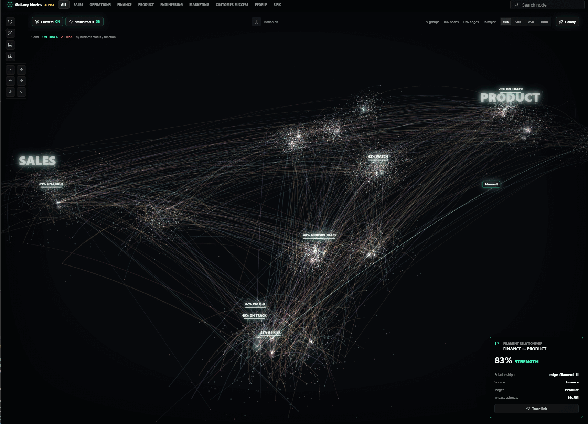

galaxy-nodes
Galaxy Nodes


A framework-neutral Three.js library for navigating dense graph data as a galaxy, with a ready-made React adapter. It renders GPU point clouds, planet-like graph nodes, selectable relationships, sparse cluster labels, camera navigation, search focus, group filters, and hover/click inspection.
Live demo | API reference | Release policy | GitHub repository
Live Demo
Try the hosted playground at danielsobrado.github.io/galaxy-nodes/demo/. The GitHub Pages workflow builds examples/basic, publishes it under /demo/, and publishes generated TypeDoc output under /api/.

Install
npm install galaxy-nodes three
React consumers should also install React peer dependencies:
npm install react react-dom
Generic Usage
The root package export remains the React adapter for backward compatibility. New React integrations can also import from galaxy-nodes/react. Because react and react-dom are optional peer dependencies, non-React consumers should import from galaxy-nodes/core instead of the bare galaxy-nodes root.
import { GalaxyGraphVisualizer, type GraphAccessors, type GraphDataset } from 'galaxy-nodes';
import 'galaxy-nodes/styles.css';
interface PersonMeta {
role: 'engineer' | 'designer';
}
const dataset: GraphDataset<PersonMeta> = {
nodes: [
{
id: 'ada',
label: 'Ada',
group: 'team-a',
major: true,
meta: { role: 'engineer' },
},
{
id: 'grace',
label: 'Grace',
group: 'team-a',
meta: { role: 'designer' },
},
],
edges: [{ source: 'ada', target: 'grace', weight: 0.8 }],
};
const accessors: GraphAccessors<PersonMeta> = {
nodeColor: (node) => (node.meta?.role === 'engineer' ? '#6bd7ff' : '#f5cf5b'),
nodeLabel: (node) => node.label ?? node.id,
};
export function GraphView() {
return (
<GalaxyGraphVisualizer
dataset={dataset}
accessors={accessors}
layout={{ seed: 'team-graph' }}
renderNodeDetail={(node) => (
<dl>
<div>
<dt>Role</dt>
<dd>{node.meta?.role ?? 'Unknown'}</dd>
</div>
</dl>
)}
/>
);
}
Lower-level React scene-only embedding is available through GalaxyScene when you want to provide your own HUD, panels, and data controls.
Framework-Neutral Core
Use galaxy-nodes/core when your app owns the framework lifecycle, such as vanilla DOM, Svelte, or a custom element. Vue and Angular can use the imperative core directly; galaxy-nodes/vue and galaxy-nodes/angular only provide framework-named aliases for the same renderer.
import { createGalaxyRenderer, type GraphDataset } from 'galaxy-nodes/core';
import 'galaxy-nodes/styles.css';
const dataset: GraphDataset = {
nodes: [{ id: 'api', label: 'API', group: 'Services', major: true }],
edges: [],
};
const renderer = createGalaxyRenderer(
document.querySelector<HTMLElement>('#graph')!,
{
dataset,
activeGroup: null,
showClusters: true,
galaxyMode: true,
cameraCommand: null,
selectedNodeId: null,
selectedEdgeId: null,
},
{
onSelectNode: (node) => console.log(node?.id),
onSceneFailure: (failure) => console.warn(failure.reason, failure.message),
},
);
// Later, patch state without remounting when topology/layout did not change.
renderer.update({
dataset,
activeGroup: 'Services',
showClusters: true,
galaxyMode: true,
cameraCommand: null,
selectedNodeId: null,
selectedEdgeId: null,
});
renderer.dispose();
Vue and Angular lifecycle examples are in docs/examples.md.
Reduced Motion
Galaxy Nodes respects prefers-reduced-motion by default. With the default motionPreference: 'system', ambient galaxy rotation, planet spin, and selection marker spin are paused for users who request reduced motion while direct interactions such as orbiting, keyboard navigation, search focus, and selection remain available.
Override the system preference only when your product has its own motion setting:
<GalaxyGraphVisualizer dataset={dataset} options={{ motionPreference: 'reduced' }} />
Use motionPreference: 'full' to force ambient motion, or omit the option to follow the user's OS/browser preference.
WebGL Fallback
If WebGL is unavailable, scene initialization fails, or the browser loses the WebGL context, the component renders an accessible fallback panel with dataset counts. Scene-only controls are disabled while the renderer is unavailable, and recoverable failures include a retry button.
<GalaxyGraphVisualizer
dataset={dataset}
onSceneFailure={(failure) => {
console.warn(failure.reason, failure.message);
}}
/>
The failure reason is one of 'webgl-unavailable', 'context-lost', or 'scene-error'.
Browsers commonly cap a tab at roughly 16 active WebGL contexts. Galaxy Nodes keeps its own supported ceiling at 12 active renderer instances so pages with several mounted graphs fail predictably before the browser starts evicting contexts. Unmount inactive graphs, reuse one renderer when possible, and inspect the live budget with getGalaxyRendererContextBudget() from galaxy-nodes/core. Apps that need a lower ceiling can set options.webglContextLimit on GalaxyGraphVisualizer or contextLimit on the imperative renderer options, and can observe budget failures with onContextBudgetExceeded.
The active-context counter is module-local. It coordinates one document using one loaded copy of Galaxy Nodes; pages that can load multiple bundled copies, such as micro-frontends, should share a single package instance or set a lower per-app context limit because separate module copies cannot see each other's counters.
import { getGalaxyRendererContextBudget } from 'galaxy-nodes/core';
console.log(getGalaxyRendererContextBudget());
Next.js
Galaxy Nodes is a client-rendered React component. In the App Router, put the graph in a client component and import the stylesheet there or from a client-side wrapper:
'use client';
import { GalaxyGraphVisualizer, type GraphDataset } from 'galaxy-nodes';
import 'galaxy-nodes/styles.css';
export function GraphClient({ dataset }: { dataset: GraphDataset }) {
return <GalaxyGraphVisualizer dataset={dataset} />;
}
The package guards browser-only work so server rendering can safely encounter the component tree, but the WebGL scene starts only after hydration. For very large graphs, next/dynamic(() => import('./GraphClient'), { ssr: false }) can still be useful to defer client bundle work; it is not required for correctness.
The repository includes examples/next, and CI runs npm run build:next plus npm run test:next after the library build to verify the package can be consumed, server-rendered, hydrated, and rendered as either a WebGL canvas or documented fallback by a Next.js App Router project.
Accessibility And Labels
The WebGL canvas is paired with a screen-reader-only graph summary. By default the summary lists the first 50 nodes and first 50 edges in the current filtered view, plus counts for the full view. Use options.accessibleSummaryLimit to tune that cap, or provide renderAccessibleSummary when your product needs a table, grouped list, or domain-specific fields. When focus is on the graph scene, Page Down/Page Up traverses nodes, Home/End jumps to the first or last visible node, Enter refocuses the current node, and Escape clears selection. Selection changes are announced through a polite live region.
Built-in chrome labels are overridable with the labels prop so applications can localize controls and status text:
<GalaxyGraphVisualizer
dataset={dataset}
labels={{
alphaBadge: 'Preview',
groupsNav: 'Teams',
motionOn: 'Motion enabled',
formatNodesCount: (count) => new Intl.NumberFormat(locale).format(count) + (count === 1 ? ' node' : ' nodes'),
searchInput: 'Search services',
}}
renderAccessibleSummary={({ nodes, edges, labels }) => (
<>
<h2>{labels.accessibleSummaryHeading}</h2>
<p>
{nodes.length} nodes and {edges.length} relationships are available in this view.
</p>
</>
)}
/>
Performance Envelope
The built-in renderer is tuned for sparse, large graph exploration:
- Published browser envelope, measured with the bundled corporate dataset shape and sparse relationship cap:
| Dataset | Edge cap | Expected FPS | Expected JS heap |
|---|---|---|---|
| 10k nodes | ~1.2k edges | 55-60 FPS | 80-120 MB |
| 100k nodes | 12k edges | 32-45 FPS | 180-260 MB |
- Target envelope: up to about 100k nodes with a sampled sparse relationship layer. The bundled corporate demo caps generated relationships at 12k.
- Nodes are always kept in one GPU point cloud, including nodes marked
major. - Major nodes get a capped instanced planet/ring overlay for inspection; the point cloud still represents every node.
- Group filters, cluster toggles, galaxy mode, selection, theme changes, and accessor changes update existing buffers, uniforms, materials, and visibility in place instead of rebuilding the renderer.
- Dataset identity/topology changes and layout option changes can still rebuild the scene because they alter coordinates, lookup maps, and edge geometry.
- Edges use sparse TubeGeometry for visual quality. Full dense enterprise graphs need a separate line-buffer or level-of-detail renderer.
For best results, keep the dataset, layout, and accessor objects stable with useMemo when their inputs have not changed.
Run the local benchmark harness after npm run build:
npm run benchmark
npm run benchmark -- --sizes 10000 --iterations 5
npm run benchmark:browser
CI runs a 10k-node smoke benchmark so data generation and layout costs remain visible without making every pull request depend on workstation GPU timing. The scheduled/manual Browser performance workflow runs npm run benchmark:browser in Chromium and reports FPS, JS heap, frame time, and nonblank canvas pixels for 10k and 100k nodes. Use that full browser harness before releases or renderer changes.
The current edge renderer intentionally spends geometry on sparse relationship quality. The next dense-graph renderer should add a line-buffer or level-of-detail edge path for very high edge counts: keep TubeGeometry for selected/highlighted relationships, batch background edges into a single buffer, and progressively reveal higher-fidelity edges near the camera or active selection.
Optional Large Graph Loading
For remote graphs, keep largeGraph.enabled off until you want URL-backed detail and explicit expansion controls. The component calls host-provided callbacks for node details, edge details, and graph expansion; it does not own URLs, auth, or caching.
Expansion callbacks return a GraphDatasetPatch, which can be merged with mergeGraphDataset(base, patch, { edgeBudget: 12_000 }). The merge upserts nodes, clusters, and edges, preserves filaments first, and keeps the highest-weight relationship edges inside the budget.
Keep auth in your host app by wrapping the callback transport. The visualizer passes an AbortSignal into each callback so authenticated requests can still be cancelled when the selection or expansion target changes:
function graphApiHeaders(jwt: string, headers?: HeadersInit) {
const nextHeaders = new Headers(headers);
nextHeaders.set('Authorization', `Bearer ${jwt}`);
return nextHeaders;
}
const fetchGraphApi = (input: string | URL, init: RequestInit = {}) => {
return fetch(input, {
...init,
headers: graphApiHeaders(jwt, init.headers),
});
};
const largeGraph = {
enabled: true,
async expandGraph(request, signal) {
const response = await fetchGraphApi(`/graph/expand/node/${request.nodeId}`, { signal });
if (!response.ok) throw new Error(`Graph expansion returned ${response.status}`);
return response.json();
},
async loadNodeDetail(node, signal) {
const response = await fetchGraphApi(`/graph/node/${node.id}/detail`, { signal });
if (!response.ok) throw new Error(`Node detail returned ${response.status}`);
return response.json();
},
};
The bundled example also accepts VITE_GRAPH_API_TOKEN for local testing. Browser-exposed Vite variables are not a secure place for production secrets; production apps should obtain JWTs from their normal client auth flow and enforce them on the graph API.
Layout
Coordinates are optional. When any node positions or cluster spatial fields are missing, Galaxy Nodes computes a deterministic 3D galaxy layout from stable node ids, node group values, and connected components. Authored node positions, cluster centers, and cluster radii are preserved by default.
<GalaxyGraphVisualizer dataset={dataset} layout={{ seed: 'docs-demo', spacing: 320 }} />
Set layout={false} when you want strict pre-positioned data; missing positions then throw a clear error. The same resolver is exported for headless use:
import { resolveGraphLayout } from 'galaxy-nodes';
const resolved = resolveGraphLayout(dataset, { seed: 'docs-demo' });
const adaPosition = resolved.nodePositions.get('ada');
Styling And Colors
Layout is spatial only. Use layout for coordinates, spacing, cluster radius, and deterministic seeds; use accessors and theme for colors, sizes, labels, and scene chrome. Accessor and theme changes update the existing renderer in place when the dataset topology and layout are unchanged.
Nodes and edges can carry direct color fields. Without custom accessors, node colors prefer node.color, then hash node.group into the built-in palette, then fall back to a neutral gray. Edge colors prefer edge.color, with separate defaults for normal relationships and filament edges.
Display text can be supplied directly on both nodes and relationships with label, name, or type. For relationships, kind remains the styling/category key and is also used as a label fallback. If your data uses another field, map it through accessors.nodeLabel or accessors.edgeLabel.
For product palettes or data-driven styling, provide GraphAccessors:
import { GalaxyGraphVisualizer, defaultNodeColor, type GraphAccessors, type GraphDataset } from 'galaxy-nodes';
const paletteByGroup: Record<string, string> = {
Product: '#facc15',
Platform: '#38bdf8',
Security: '#fb7185',
};
const accessors: GraphAccessors = {
nodeColor: (node) => node.color ?? paletteByGroup[node.group ?? ''] ?? defaultNodeColor(node),
edgeColor: (edge) => edge.color ?? (edge.weight && edge.weight > 0.75 ? '#f5cf5b' : '#6bd7ff'),
edgeLabel: (edge) => edge.label ?? edge.name ?? edge.type ?? edge.kind ?? null,
nodeSize: (node) => node.size ?? (node.major ? 3 : 1),
nodeLabel: (node) => node.label ?? node.name ?? node.type ?? null,
};
export function StyledGraph({ dataset }: { dataset: GraphDataset }) {
return (
<GalaxyGraphVisualizer
dataset={dataset}
accessors={accessors}
theme={{
background: '#07090d',
panelAccentColor: '#67e8c9',
selectedColor: '#f8fafc',
}}
/>
);
}
theme.background controls the WebGL clear color and app background. theme.panelAccentColor controls HUD accents and secondary selection markers. theme.selectedColor controls selected/highlighted scene elements. There is no separate palette prop; keep palette logic in nodeColor or domain-specific accessor helpers.
Node Image Trust Model
GraphNode.image and GraphAccessors.nodeImage can point to arbitrary consumer-supplied URLs. Galaxy Nodes passes those URLs to THREE.TextureLoader and sets crossOrigin to anonymous before loading textures.
Treat node image URLs as remote content owned by your host application, not as trusted package assets:
- Validate or map image URLs to an allowlist of origins before passing them to the renderer.
- Configure your Content Security Policy so
img-srcallows only the image origins you trust. The renderer cannot bypass CSP. - Cross-origin image servers must allow anonymous CORS requests, for example with an appropriate
Access-Control-Allow-Originresponse. Without that, browser/WebGL texture loading may fail. - Avoid embedding tokens, private identifiers, or user secrets in image URLs because browsers, CDNs, logs, and referrers may expose them.
- If users can submit graph JSON directly, sanitize or reject unexpected
imagevalues during import.
Corporate Demo Preset
The corporate operations demo is available as a preset, not part of the generic root module:
import { GalaxyGraphVisualizer } from 'galaxy-nodes';
import {
createInitiativeAccessors,
generateGalaxyDataset,
renderInitiativeEdgeDetail,
renderInitiativeNodeDetail,
} from 'galaxy-nodes/presets/initiatives';
import 'galaxy-nodes/styles.css';
const dataset = generateGalaxyDataset(75_000);
const accessors = createInitiativeAccessors({ sharpMoney: true });
export function InitiativeGraph() {
return (
<GalaxyGraphVisualizer
dataset={dataset}
accessors={accessors}
renderNodeDetail={renderInitiativeNodeDetail}
renderEdgeDetail={renderInitiativeEdgeDetail}
/>
);
}
Dataset Shape
interface GraphDataset<NMeta = unknown, EMeta = unknown, CMeta = unknown> {
nodes: GraphNode<NMeta>[];
edges: GraphEdge<EMeta>[];
clusters?: GraphCluster<CMeta>[];
generatedAt?: string;
}
interface GraphDatasetPatch<NMeta = unknown, EMeta = unknown, CMeta = unknown> {
nodes?: GraphNode<NMeta>[];
edges?: GraphEdge<EMeta>[];
clusters?: GraphCluster<CMeta>[];
generatedAt?: string;
}
interface GraphNode<TMeta = unknown> {
id: string;
position?: { x: number; y: number; z: number };
label?: string;
name?: string;
type?: string;
size?: number;
major?: boolean;
group?: string;
color?: string;
meta?: TMeta;
}
interface GraphEdge<TMeta = unknown> {
id?: string;
label?: string;
name?: string;
source: string;
target: string;
type?: string;
weight?: number;
kind?: string;
color?: string;
meta?: TMeta;
}
interface GraphCluster<TMeta = unknown> {
id: string;
label: string;
center?: { x: number; y: number; z: number };
radius?: number;
group?: string;
color?: string;
meta?: TMeta;
}
parseGraphDataset validates untrusted JSON, accepts positionless nodes, rejects malformed provided coordinates, passes meta through untouched, defaults missing clusters to [], and supplies generatedAt when absent.
Edges whose source and target match cluster ids render as large-scale galaxy filaments. Edges whose endpoints match node ids render as selectable graph relationships. Nodes marked major become interactive planet nodes.
Develop
npm install
npm run dev
The dev server runs examples/basic, which imports the library through the package export path. Build the package and example separately:
npm run build
npm run size
npm run build:example
npm run build:next
npm run test:next
npm run package:check
Run the full contribution gate locally with:
npm run ci
Browser-mode WebGL tests run through the pinned Playwright version in devDependencies and compare against src/__screenshots__/core-renderer-galaxy.png. To refresh that checked-in visual baseline after an intentional renderer change, run VITE_UPDATE_GALAXY_SCREENSHOTS=1 npm run test:browser on macOS/Linux, or $env:VITE_UPDATE_GALAXY_SCREENSHOTS='1'; npm run test:browser; Remove-Item Env:VITE_UPDATE_GALAXY_SCREENSHOTS in PowerShell, then review the PNG diff before committing it. The visual assertion allows a small SwiftShader pixel tolerance, so only refresh the baseline when the rendered scene change is expected.
API compatibility is locked with API Extractor reports under etc/*.api.md, and API documentation is generated with TypeDoc:
npm run api:check
npm run docs:api
Focused examples are in docs/examples.md, covering a minimal graph, custom data shape, custom theme, scene-only/no-HUD usage, and Next.js client components. GitHub Actions builds the package, example app, tests, lint, format check, and generated API docs on every PR. The Pages workflow publishes the live demo and API docs from main.
Memgraph Demo
This repo includes a Dockerized Memgraph demo in demo/memgraph.
cd demo/memgraph
docker compose up --build
That starts Memgraph Platform, seeds a graph dataset into Memgraph, and exposes a graph API on http://localhost:8787/graph. Run the example with VITE_GRAPH_API_URL=http://127.0.0.1:8787, then use the database button in the left toolbar to load nodes and relationships from Memgraph.